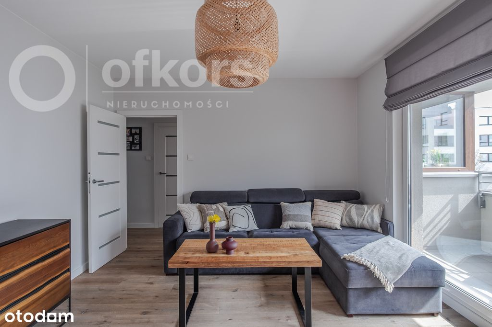
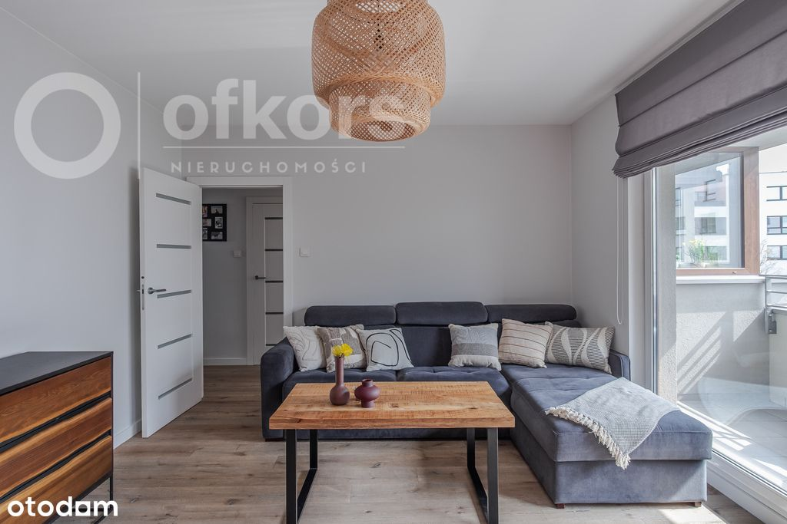

Na sprzedaż bardzo ustawne, 3 pokojowe mieszkanie z oddzielną kuchnią na Targówku. Idealne dla osób, które szukają mieszkania przestronnego, wykończonego wysokiej jakości produktami. To świetna lokalizacja do życia, łącząca wygodę transportu z pełną infrastrukturą miejską w zasięgu ręki. Zapraszam do zapoznania się ze szczegółami oferty.
LOKALIZACJA
Nieruchomość położona jest na na Targówku przy ul. Pohulanka na osiedlu WILNO. Mieszkanie znajduje się na 1 piętrze w 3 piętrowym budynku z windą, wybudowanym w 2018 roku. Teren osiedla jest zamknięty i monitorowany z pięknie zaaranżowanymi terenami zielonymi.
MIESZKANIE
Na powierzchni 68,4m2 wyodrębniono:
-Salon 18 m2 z wyjściem na loggię ok.6 m2
-Oddzielną kuchnię 10m2
-Sypialnię 12,5 m2
-Sypialnię 10,5 m2
-Łazienkę z prysznicem 4,5 m2
-Garderobę z pralnią 3 m2
-Przedpokój 9 m2
Mieszkanie zostało bardzo starannie wykończone z dbałością o jakość i detale. Na podłogach w pokojach oraz przedpokoju znajduje się olejowana deska dębowa (ręcznie formowana) szwedzkiej firmy Kahrs. W łazience, garderobie oraz kuchni na podłodze położony został gres. Kuchnia, szafa w przedpokoju oraz garderoba z pralnią wykonane na wymiar przez stolarza. Kuchnia wyposażona została w AGD firm Siemens oraz Samsung. W mieszkaniu (w salonie) została zamontowana klimatyzacja.
Ekspozycja okien- okna salonu i kuchni wychodzą od strony ulicy Pohulanka, a okna dwóch sypialni na wewnętrzną stronę osiedla
DODATKOWE INFORMACJE
Do mieszkania przynależy miejsce postojowe w garażu podziemnym, dodatkowo płatne 50 000 zł. Dodatkowo w miejscu garażowym znajduje się stalowy box pełniący funkcję komórki lokatorskiej.
Czynsz administracyjny wynosi 930 zł
Stan prawny: odrębna własność z KW- można kredytować zakup
KOMUNIKACJA
- osiedle jest bardzo dobrze skomunikowane z centrum Warszawy- w zaledwie 5 minut dojdziemy do kolejki, którą w 4 minuty dojedziemy do stacji metra Dworzec Wileński
- na terenie osiedla są linie autobusowe, które zawiozą nas na Dworzec Wschodni oraz do stacji metra Trocka
- na terenie osiedla znajdują się liczne sklepy, restauracje oraz punkty edukacyjne i usługowe
Jeśli zainteresowała Cię ta nieruchomość, to zapraszam do kontaktu i umówienia się na dogodny termin prezentacji.
Oferta wysłana z programu dla biur nieruchomości ASARI CRM ()
 
